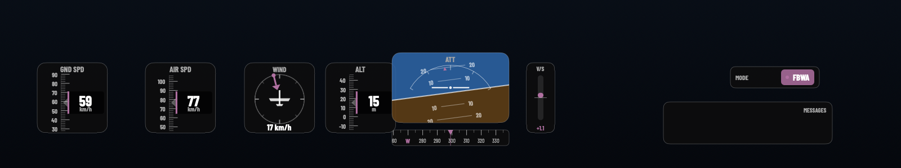

Skyline reads an ArduPilot .bin dataflash log and renders a
transparent HUD overlay to composite over your flight footage —
natively on your Mac, no command line required.
Version 0.1 (beta) · macOS 14 Sonoma or later ·
Apple silicon & Intel

⚠︎ Opening Skyline the first time
Skyline isn’t notarised by Apple — it’s a free app
distributed outside the Mac App Store — so macOS Gatekeeper will
block it on first launch. This is expected. Open it once with either
method below; after that it launches normally.
Quickest — Terminal
Open Skyline.dmg and drag Skyline
into your Applications folder.